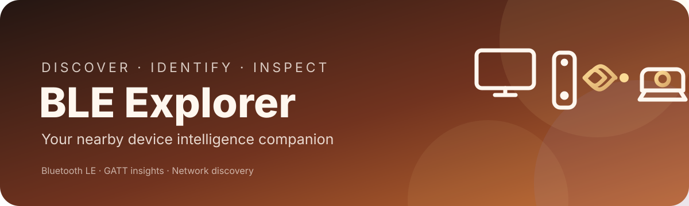
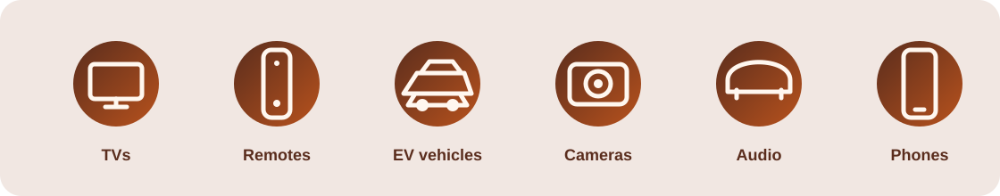

01 · DISCOVER
Nearby Bluetooth
BLE advertisements, signal quality, device names, services and manufacturer data.

Discover nearby Bluetooth devices, identify their likely category, inspect supported BLE services and review reachable devices on networks you’re authorized to assess.

BLE advertisements, signal quality, device names, services and manufacturer data.
TVs, remotes, EVs, cameras, audio, phones, wearables and more.
Pairing state and supported GATT services and characteristics.
Authorized ONVIF, SSDP/UPnP, RTSP and web-service checks.
No password guessing, exploit execution or stream viewing.
Android source and automated build workflows are available on GitHub.